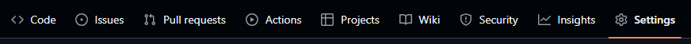
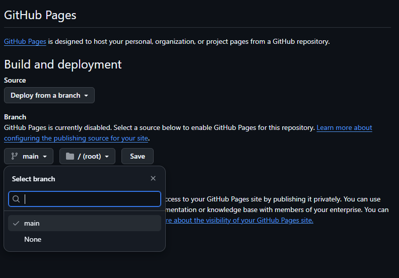
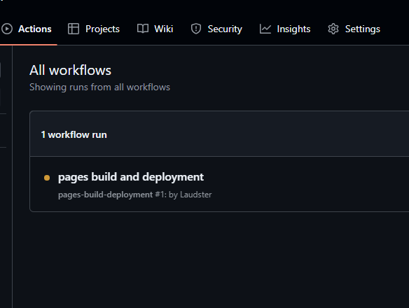
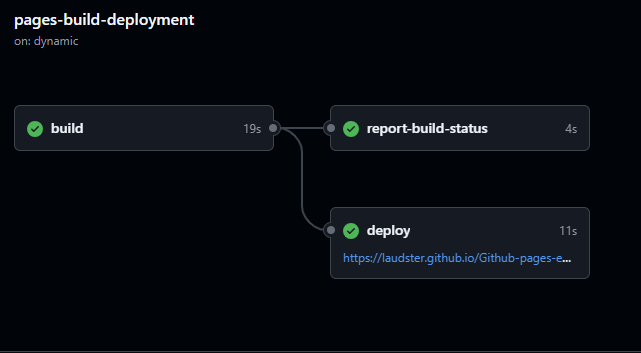

Hvordan hoste en nettside med github-pages
Gjennom denne guiden skal jeg vise hvordan du kan hoste din egen nettside gratis ved hjelp av github pages.
Dette skal være nettsiden jeg skal hoste:
<!DOCTYPE html>
<html lang="en">
<head>
<meta charset="UTF-8">
<meta name="viewport" content="width=device-width, initial-scale=1.0">
<title> Eksempel side </title>
</head>
<body>
<h1> Nettside </h1>
<h3> Dette er bare et eksempel </h3>
</body>
</html>
Det er viktig at du gir filen din navnet index.html. Når du laster det opp på github vil det fortelle github at det er startsiden.
Nå må du gå til Github og lage et nytt repository. Så må du laste opp nettsiden din.
Etter det må du gå over til settings, og så videre over til pages.

Deretter må du endre branch fra None til Main, og så er det viktig du husker å trykke save.

Om du går over til Actions kan se at Github gjør klar nettsiden din.

Etter litt tid vil den bli ferdig og du kan trykke på den og få opp en lenke til nettsiden din.
